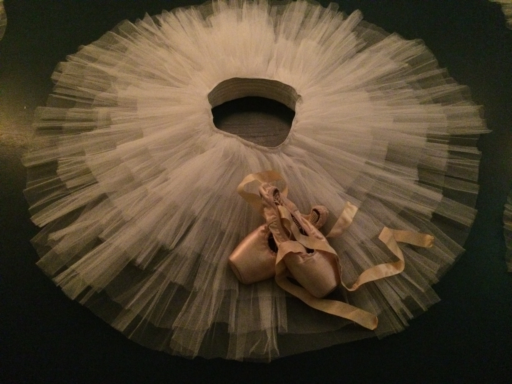

Corona Virus
 Lieve leerlingen, ouders/ verzorgers,
Helaas is er nog steeds onduidelijkheid wanneer dansscholen hun deuren weer mogen openen. Wij zijn een plan aan het maken voor het moment dat het weer mag. Zodat we dan op gepaste afstand toch samen weer kunnen gaan dansen. Wij blijven de richtlijn van het RIVM volgen en blijven tot nader bericht gesloten.
Wij als docenten zullen onze uiterste best doen om online zoveel mogelijk oefeningen en dansmateriaal naar jullie te sturen zodat jullie thuis aan de slag kunnen. Omdat we snappen dat live danslessen toch anders zijn dan thuis met de stoelen aan de kant, willen we jullie graag, naast de online lessen die we voor jullie blijven maken ook momenten gaan aanbieden dat jullie lessen kunnen inhalen. Zodra we weten wanneer we weer in de studio mogen zullen we data prikken voor deze inhaal momenten.
Met deze aanpak probeer ik de docenten in deze moeilijke periode te ondersteunen en de balletschool straks te laten blijven bestaan. Ik hoop jullie hiermee zo goed als we kunnen tegemoet te komen en vraag jullie begrip en geduld in deze moeilijke periode.
Voor nu, namens ons allemaal, blijf gezond en hopelijk tot snel dans!
Open Podium
 op zondag 5 juli hebben we het Open Podium gepland, nu is dat nog even koffiedik kijken of het door kan gaan, maar wie weet zijn de dagen thuis nu wel de gelegenheid om te oefenen voor een mooie danssolo. Of een dans met je broer of zus, moeder, vader, zoon of dochter.
op zondag 5 juli hebben we het Open Podium gepland, nu is dat nog even koffiedik kijken of het door kan gaan, maar wie weet zijn de dagen thuis nu wel de gelegenheid om te oefenen voor een mooie danssolo. Of een dans met je broer of zus, moeder, vader, zoon of dochter.
Hopelijk kunnen we dan het seizoen toch nog prachtig afsluiten. Je kunt je aanmelden via babs@babsballetschool.nl
Succes!
DansDag
 De Dansdag die was gepland op 19 april komt door de maatregelen omtrent het Coronavirus helaas te vervallen, wellicht lukt het nog op een later moment in het seizoen.
We houden jullie op de hoogte.
De Dansdag die was gepland op 19 april komt door de maatregelen omtrent het Coronavirus helaas te vervallen, wellicht lukt het nog op een later moment in het seizoen.
We houden jullie op de hoogte.
Artez Project
 vanaf 27 januari is Sarah, stagiaire van ArtEZ dansacademie, gestart met het ArtEZ project. Zij studeert met een groep dansers vanuit onze balletschool een choreografie in. Een unieke ervaring waar we heel trots op zijn!
De Eind presentatie op 4 april in het theater van ArtEZ dansacademie, zal op die dag helaas niet doorgaan. ArtEZ zoekt nog een ander moment, hopelijk kan het dan alsnog doorgaan.
Wordt vervolgd...
vanaf 27 januari is Sarah, stagiaire van ArtEZ dansacademie, gestart met het ArtEZ project. Zij studeert met een groep dansers vanuit onze balletschool een choreografie in. Een unieke ervaring waar we heel trots op zijn!
De Eind presentatie op 4 april in het theater van ArtEZ dansacademie, zal op die dag helaas niet doorgaan. ArtEZ zoekt nog een ander moment, hopelijk kan het dan alsnog doorgaan.
Wordt vervolgd...
BalletPuzzel
 ⬆⬆⬇⬇⬅➡⬅➡ ba
⬆⬆⬇⬇⬅➡⬅➡ ba
Seizoen 19-20
Een Gratis proefles doen? Zodra de balletschool weer open mag bent u van harte welkom! Neem even contact op voor een proefles.
Alvast inschrijven voor het nieuwe seizoen 2020-2021? : inschrijfformulier